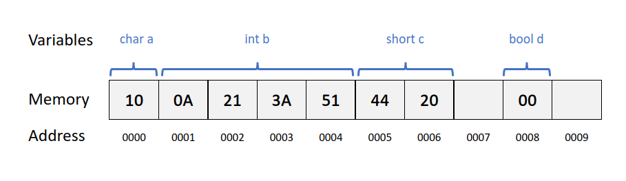

C++ Variables
The usefulness of the "Hello World" programs shown in the previous chapter is rather questionable. We had to write several lines of code, compile them, and then execute the resulting program, just to obtain the result of a simple sentence written on the screen. It certainly would have been much faster to type the output sentence ourselves.
However, programming is not limited only to printing simple texts on the screen. In order to go a little further on and to become able to write programs that perform useful tasks that really save us work, we need to introduce the concept of variables.
Let's imagine that I ask you to remember the number 5, and then I ask you to also memorize the number 2 at the same time. You have just stored two different values in your memory (5 and 2). Now, if I ask you to add 1 to the first number I said, you should be retaining the numbers 6 (that is 5+1) and 2 in your memory. Then we could, for example, subtract these values and obtain 4 as result.
The whole process described above is a simile of what a computer can do with two variables. The same process can be expressed in C++ with the following set of statements:
a = 5;
b = 2;
a = a + 1;
result = a - b;
Obviously, this is a very simple example, since we have only used two small integer values, but consider that your computer can store millions of numbers like these at the same time and conduct sophisticated mathematical operations with them.
We can now define variable as a portion of memory to store a value.
While writing program in any language, you need to use various variables to store various information. Variables are nothing but reserved memory locations to store values. This means that when you create a variable you reserve some space in memory.
You may like to store information of various data types like character, wide character, integer, floating point, double floating point, boolean etc. Based on the data type of a variable, the operating system allocates memory and decides what can be stored in the reserved memory.
- A variable is actually a place to store information in a computer.
- It is a location (or series of locations) in the memory.
- The name of a variable can be considered as a label of that piece of memory.
Declaration of Variables
Creating variables is also called declaring variables.
C++ is a strongly-typed language, and requires every variable to be declared with its type before its first use. This informs the compiler the size to reserve in memory for the variable and how to interpret its value.
The syntax to declare a new variable in C++ is straightforward: we simply write the type followed by the variable name (i.e., its identifier). For example:
int a;
float my_number;
These are two valid declarations of variables. The first one declares a variable of type int with the identifier a. The second one declares a variable of type float with the identifier mynumber. Once declared, the variables a and mynumber can be used within the rest of their scope in the program.
If declaring more than one variable of the same type, they can all be declared in a single statement by separating their identifiers with commas. For example:
int a, b, c;
This declares three variables (a, b and c), all of them of type int, and has exactly the same meaning as:
int a;
int b;
int c;
Note: A variable must be given a unique name as identifier, learn more about identifiers.
Initialization of Variables
When the variables in the example above are declared, they have an undetermined value until they are assigned a value for the first time. But it is possible for a variable to have a specific value from the moment it is declared. This is called the initialization of the variable.
-
The first one, known as C-like initialization (because it is inherited from the C language), consists of appending an equal sign followed by the value to which the variable is initialized:
type identifier = initial_value;For example, to declare a variable of type int called x and initialize it to a value of zero from the same moment it is declared:
int x = 0; -
The second method, known as constructor initialization (introduced by the C++ language), encloses the initial value between parentheses
()type identifier (initial_value);For example:
int x(0); -
The third method, known as uniform initialization, similar to the above, but using curly braces
{}instead of parentheses (this was introduced by the revision of the C++ standard, in 2011):type identifier {initial_value};For example:
int x{0};
Storing and Access Values of Variables
A variable can be declared without initialization, and a value can be stored to a variable at some point later. Storing value into a variable can also be known as assigning data to a variable.
In C++, the = is called an assignment operator. Assignment operator is used to assigning value to a variable. The left side operand of the assignment operator is a variable and right side operand of the assignment operator is a value.
x = 10 ;
my_char = 'Z' ;
To access the value of a variable, we simply use the variable name in a statements. For example:
sum = x + y;
Note: See here for general rules of thumb for naming a variable. For a more standard style guide, please refer to Google C++ Style Guide.
C++ Constants
Constants refer to fixed values that the program may not alter and they are called literals.
Constants can be of any of the basic data types and can be divided into Integer Numerals, Floating-Point Numerals, Characters, Strings and Boolean Values.
Again, constants are treated just like regular variables except that their values cannot be modified after their definition. The value of a constant will be fixed until the end of the program.
There are two types of constants:
- Literal Constants - come with the language, e.g. a number 39 (cannot assign another value to 39)
- Symbolic Constants - user defines a name as a label for it
Defining Symbolic Constants
A symbolic constant can be defined in two ways.
-
Use the preprocessor
#define#define DAYS_PER_WEEK 7- No type need to be defined for
DAYS_PER_WEEK. - Preprocessor just replaces the word
DAYS_PER_WEEKwith7whenever it is found in the program.
- No type need to be defined for
-
Use
constkeywordconst unsigned short DAYS_PER_WEEK = 7;- Variable
DAYS_PER_WEEKhas a fixed value7. - It has a type now. This feature helps the compiler to debug the program.
- Variable
Why do we need Constants
- Help debugging the program: Compiler wil lautomatically check if a constant is modified by the program later (and reports it if modified).
- Improve redability: Give the value a more meaningful name. e.g. use
degreeInCirclerather then writing360. - Easy modification: If a constant really need to be changed, only need to change the line where it is defined in the source code.